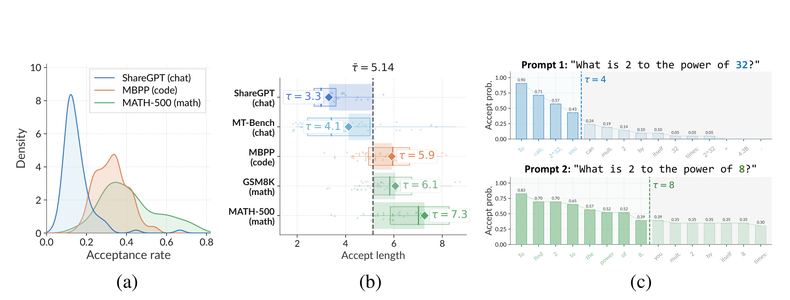
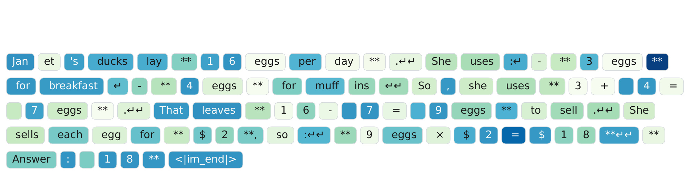
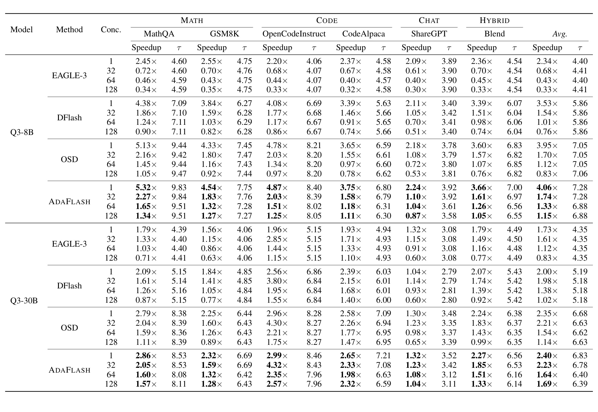
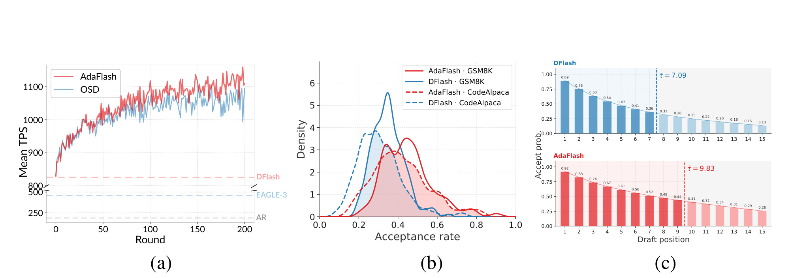
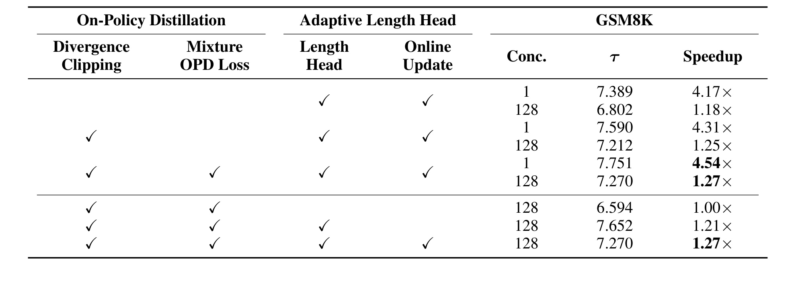
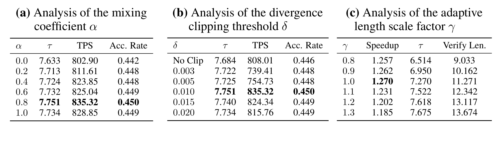
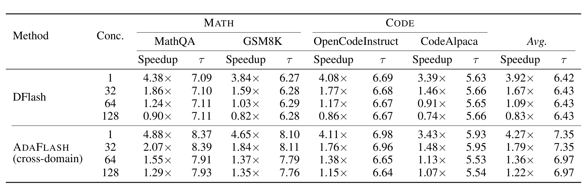
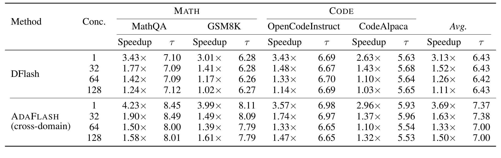

AdaFlash：基于在策略蒸馏扩散草稿器的自适应投机解码
英文标题：AdaFlash: Adaptive Speculative Decoding via On-Policy Distilled Diffusion Drafters
- 作者：Yu-Yang Qian、Hao-Cong Wu、Chen Chen、Jiacheng Sun、Zhenhua Dong、Peng Zhao、Zhi-Hua Zhou
- 机构：南京大学新型软件技术国家重点实验室、南京大学人工智能学院；合作机构为华为基础模型部门
- 公开时间：2026-07-21
- 论文入口：arXiv:2607.19223
- 方向：大模型推理系统、投机解码、扩散语言模型、在线蒸馏
- 代码状态：截至本次阅读，论文入口与正文未给出可独立核验的代码仓库
1. 背景和问题
投机解码的基本交易是“用小模型多做一点便宜计算，换大模型少做几轮昂贵的串行解码”。草稿模型先提出长度为 (k) 的候选块，目标模型一次前向并行验证这些位置；从头开始连续通过的 token 被保留，第一次拒绝处再按残差分布采样，所以最终输出分布与直接使用目标模型一致。传统自回归草稿器仍要顺序跑 (k) 次，小模型虽然便宜，却没有真正消除候选生成的串行链。DFlash 一类扩散草稿器改用双向注意力和 mask-and-denoise，一次前向同时填充整个候选块，理论上把单位 token 草稿成本大约压到自回归草稿器的 (1/k)。这使更深、更有表达力的草稿器在低草稿延迟下成为可能，也是 AdaFlash 选择扩散草稿器而非重新设计 AR draft head 的前提。
但“双向”并不只带来并行性。块内每个位置都依赖整段 masked block 的全局结构，因此一个很小的前缀变化可能重排多个位置的概率；训练域与部署域不同，也会让整块表示同时漂移。作者把后果拆成两层：domain-level variance 指代码、数学、对话等领域之间的接受率落差；token-level variance 指同一个候选块内部，前后位置的质量和接受概率高度不均。前者让离线固定草稿器在新流量上失配，后者让固定 (k=16) 的系统明知后半段不可靠，仍要求目标模型验证全部 16 个位置。两种浪费在低并发时可能被较高的单请求接受长度掩盖，到高并发时会直接抢占 target model 的 batch 计算预算。

Figure 1 的三幅子图把“方差”从抽象概念变成可观测部署现象。 左图显示 ShareGPT、MBPP、MATH-500 的接受率密度明显错位：对话分布集中在约 0.1，代码与数学更多位于约 0.3 到 0.4，说明一个固定草稿器不能用单一平均接受率描述。中图进一步把五个数据集的平均接受长度排开，从 ShareGPT 的约 3.3、MT-Bench 的 4.1，到 MBPP/GSM8K 的约 5.9/6.1、MATH-500 的 7.3；若统一验证 16 个候选，低接受长度请求会产生大量无效 target 计算。右图只把提示中的 (2^{32}) 换成 (2^8)，接受长度就从 4 变成 8，而且后续位置概率轨迹整体改变。它支持作者对 token-level variance 的判断，不过这是代表性例子，不等于给出了位置方差的总体置信区间。
AdaFlash 的问题定义因此不是“继续提高离线草稿器的平均精度”，而是让系统在部署分布上形成闭环：目标模型验证时本来就会产生逐位置监督，能否把它异步回流给草稿器，持续缩小领域错配？每个请求的可靠前缀又不同，能否在验证前预测可接受比例，只把值得验证的部分送给目标模型？论文的两个核心组件正好一一对应：on-policy distillation（OPD）处理跨域漂移，adaptive length head 处理逐请求、逐位置的验证预算；随后还必须改造训练—推理管线与调度器，才能让算法收益在并发服务中兑现。
这项工作的价值也应按系统论文而非纯建模论文来判断。作者声称最高约 5.3 倍于标准 AR 解码，并在高并发下相对既有强方法得到最高约 66% 的吞吐提升；真正需要核验的是三件事：接受率提升是否稳定而非少量域上的均值抬高，长度头是否在接受长度略降时仍能净省 target 验证成本，以及异步在线训练是否把延迟开销藏到另一组资源而未纳入比较。后文会分别用主结果、适配曲线、消融与附录硬件实验来审视这三点。
2. 方法
2.1 On-Policy Distillation：draft-feedback-adapt 闭环
先看 AdaFlash 要优化的系统量。若单个候选 token 的平均接受率为 (\mathrm{Acc})，一次候选块最多含 (k) 个 token，则一轮投机解码期望产出的 token 数如下。它把“每个位置看起来只差一点”的概率偏差，转换为连续前缀被截断的累计代价：
符号解释：(\tau) 是一轮中连续接受的草稿 token 数并计入额外目标 token 的输出长度；(\mathrm{Acc}) 是草稿分布相对目标分布的平均接受率；(k) 是候选块长度。这个式子说明接受率的收益会沿位置连乘：后段概率稍差，就可能显著压低可连续保留的前缀。
若草稿模型生成一个 token 的耗时相对目标模型为 (\rho)，理想化加速率可写成下式。这里先忽略 batch 形状、显存带宽、调度空洞和 kernel 启动开销，因此它是设计方向的解释式，而不是线上 TPS 的精确预测器：
符号解释：(\eta) 是相对标准 AR 解码的加速；(\rho k) 是生成 (k) 个候选的相对成本；分母中的 (1) 是一次目标验证成本。扩散草稿器能一次并行填完整块，使 (\rho_{\mathrm{dLLM}}) 近似为 (\rho_{\mathrm{AR}}/k)，但如果接受率在部署域骤降，或 target 仍验证大量低质量位置，分子优势会被验证成本吃掉。AdaFlash 的核心不是单独最大化接受长度，而是同时改善分子并压缩真实验证分母。
在第 (t) 轮，当前草稿器 (q_{w_t}) 根据前缀 (x_{<t}) 和 masked state (z) 生成候选块；目标模型验证时给出每个位置的完整分布 (p_v(\cdot\mid x_{<t+i}))。AdaFlash 把这些当前策略实际访问到的状态送入 replay buffer，再由后台训练服务更新草稿器。与在固定语料上蒸馏不同，监督状态随着当前草稿器和线上请求共同演化，因而训练分布与推理分布对齐。目标模型只提供软分布与 top-1 标签，权重始终冻结；在线变化的是草稿器和长度头。
扩散草稿器的双向注意力容易产生较高熵分布。若只用常见的 forward KL 或交叉熵，学生会被鼓励覆盖教师分布的多种模式；投机解码真正关心的却是候选落在目标高概率区域并能连续通过验证。两者优化偏好并不相同，因此论文采用 mode-seeking 的 reverse KL：
符号解释：(q_w) 是扩散草稿器分布，(p_v) 是冻结目标模型分布；(i) 是候选块位置，(k) 是块长；方括号下标表示一次并行前向中第 (i) 个位置的输出。reverse KL 惩罚草稿器把质量放到 target 低概率区域，但单靠它收敛较慢，所以作者再用目标 top-1 token (x_i^\star) 的硬标签交叉熵 (\ell_{\mathrm{hard}}) 提供低方差锚点。
普通 reverse KL 还有一个针对扩散草稿器的稳定性问题：对每个位置，损失要遍历词表 (V)。若少数词 (y) 上 (q_w(y)) 不小而 (p_v(y)) 极小，项 (q_w(y)\log(q_w(y)/p_v(y))) 会异常大并主导整次更新。AdaFlash 不是裁剪总梯度，而是在位置—词表项层面先截断：
符号解释：(V) 是词表，(y) 是一个词表项，(\delta>0) 是单项散度上限；其余符号与上式一致。逐项裁剪保留大量正常词项的方向，只压住少数离群贡献，和全局 norm clipping 的作用位置不同；它还允许同一位置的大多数正常类别继续提供细粒度教师信号。最终 OPD 目标为：
符号解释：(\alpha\in[0,1]) 控制目标模型 top-1 硬标签与裁剪 reverse KL 的混合；论文默认 (\alpha=0.8)、(\delta=0.01)。前者加速向正确 token 收敛，后者保留 target 分布结构并抑制扩散输出过度铺平。

Figure 3 展示一条 GSM8K 回答中散度并不均匀分布。 每个胶囊是生成 token，颜色越深表示该位置的 reverse-KL 越大；若干数字、运算符或格式 token 明显更深，而相邻普通词可能很浅。这张图能支持“少量位置存在异常贡献”，也解释为何要在位置与词表项层面裁剪，避免异常项把整个 batch 的更新方向带偏。若直接裁掉整条序列或整层梯度，正常位置也会同步失去学习信号；逐项上限更像在保留主体梯度的同时限制长尾杠杆。不过图中颜色汇总到 token 级，而公式实际裁剪的是 token 内每个词表项，因此它是动机可视化，不是对裁剪后梯度方差的直接统计证明。后续 Table 3 中 (\delta) 的敏感性才提供定量佐证。
2.2 Adaptive Length Head：把 token 方差变成验证预算
OPD 改善草稿质量，却不能保证每个请求的 16 个位置同样可靠。长度头与扩散草稿器读取同一组隐藏状态 (h_t\in\mathbb{R}^{k\times H})：先做线性投影和 SiLU，得到每个位置的 (h'_i\in\mathbb{R}^{H'})，再沿位置平均池化成全局块表示，最后经线性层和 sigmoid 输出预测接受率 (\hat a_t)。它刻意预测“整个块会接受多少比例”，而非为每个位置分别校准条件接受概率，从而避开逐位置误差连乘。
符号解释：(h'_i) 是第 (i) 个位置降维后的特征，(\bar h_t) 是候选块全局表示；(\hat a_t\in[0,1]) 是预测接受率，(\hat k_t) 是实际送入目标模型验证的前缀长度；(\gamma>0) 是面向负载的缩放因子，默认取 1。clamp 保证至少验证一个位置且不超过原始块长。这样，低质量请求不会和高质量请求一样固定占用 16 个 target token 的验证槽位。
目标模型验证后得到真实接受比例 (a_t^\star)，长度头用均方误差在线学习。标签来自本轮已经发生的验证，所以不会再调用一次 target；代价主要落在样本缓存、head 反向和参数同步，而不是额外教师推理：
符号解释：(\hat a_t) 是验证前预测，(a_t^\star) 是本轮实际接受 token 数除以候选长度得到的标签。这个监督不需额外标注，但并非“零计算”：特征前向、buffer 和训练仍有开销。关键设计是 (\ell_{\mathrm{len}}) 对草稿器 detach，只更新长度头；OPD 负责让 (q_w) 接近 target，MSE 负责估计当前 (q_w) 的可用前缀，两个目标不会直接拉扯同一组参数。由于 OPD 会持续改变草稿分布，长度头也必须在线更新；固定 head 很快会面对过期的质量—长度映射。
2.3 异步训练—推理与自适应请求调度
算法闭环若同步执行，会把在线训练时间直接加到用户请求上。AdaFlash 在 SGLang 上把系统拆成推理服务器与训练服务器：推理侧记录 prompt、草稿响应和验证反馈到共享 buffer；训练侧在独立 GPU 上消费满 128 条的 buffer，计算目标监督并更新草稿器与长度头。新权重只在调度步骤之间热加载，target model 常驻且不变。论文设置每批训练 2 个 epoch、batch size 1、梯度累积 2，有效 batch size 为 2；草稿器用 AdamW、学习率 (3\times10^{-4})，长度头用 (2\times10^{-4})。异步保证训练不阻塞 token 生成，但意味着线上收益依赖额外训练资源和权重热更新工程。
可变 (\hat k_t) 还要求验证 batch 改形。固定系统通常构造 (bs\times k) 的矩形张量；AdaFlash 按请求把真实验证 token 紧凑打包，总长度变成 (\sum_{i=1}^{N}\hat k_i)。这能在高并发下释放 target 计算，但下一轮究竟能推进多少请求变得不稳定。调度器用指数移动平均估计可接纳请求数：
符号解释：(N) 是刚完成一轮实际推进的请求数，(\hat N) 是平滑后的下一轮容量估计，(\beta\in(0,1)) 是新观测权重。若真实显存仍超预算，多余请求回到 pending queue。至此信号链闭合：target 验证产生 OPD 与长度标签，后台更新两个轻量组件，推理侧热加载，长度头决定每个请求的 (\hat k)，调度器再把不同长度压成紧凑 batch。训练时使用完整 target 分布和真实接受比例，推理时只增加长度头前向与变长打包；两者的资源边界是复现时必须分别测量的。
3. 实验结果
3.1 设置、基线与指标口径
主实验覆盖 MathQA、GSM8K 两个数学任务，OpenCodeInstruct、CodeAlpaca 两个代码任务，ShareGPT 对话和混合域 Blend；附录再加入 MATH-500 与 AIME25 的 32K thinking 长序列，共八个基准。目标模型包含稠密 Qwen3-8B、MoE Qwen3-Coder-30B-A3B，以及采用 Gated DeltaNet 的 Qwen3.5-9B。基线是标准 AR decoding、AR 草稿器 EAGLE-3、离线扩散草稿器 DFlash、使用 forward-KL 在线蒸馏 DFlash 的 OSD。默认 DFlash block size 为 16，推理用 temperature 0；论文也在附录测试 temperature 1。
论文报告两个主指标。Speedup 定义为某方法 TPS 除以标准 AR decoding 的 TPS，属于墙钟吞吐/效率指标；平均接受长度 (\tau) 表示每个投机轮次连续保留的 token 数，属于草稿质量指标。并发 (C\in{1,32,64,128}) 是第三个关键维度，因为固定候选长度的浪费会随 batch 压力放大。需要强调：论文没有报告逐请求 P50/P95/P99 首 token 或端到端延迟。因此 C=1 speedup 可近似反映低并发墙钟效率，但高并发 TPS 提升不能直接宣称尾延迟同步改善；排队策略、训练资源与热加载抖动仍需服务级测量。
3.2 主结果：低并发提高接受质量，高并发减少验证浪费

Table 1 要横向和纵向一起读。 在 Qwen3-8B、(C=1) 下，AdaFlash 六域平均 speedup 为 4.06 倍，高于 DFlash 3.53 倍、OSD 3.95 倍和 EAGLE-3 2.34 倍；平均 (\tau) 为 7.28，也高于 DFlash 5.86 与 OSD 7.05。MathQA 上 AdaFlash 达到 5.32 倍、(\tau=9.83)，相对 DFlash 的 4.38 倍、7.09，说明 OPD 不只缩短验证，还提高了可接受前缀。到 (C=128)，DFlash 和 OSD 平均降至 0.76 倍与 0.83 倍，已经慢于标准 AR；AdaFlash 仍有 1.15 倍。相对 OSD 的吞吐增幅约为 (1.15/0.83-1\approx38.6\%)，相对 DFlash 约 51.3%。具体到 ShareGPT，AdaFlash 也只有 0.87 倍，提示它并非每个域都能在最高并发下胜过 AR。
MoE 目标 Qwen3-Coder-30B-A3B 上，高并发差距更明显：(C=128) 时 AdaFlash 平均 1.69 倍，OSD 为 1.14 倍、DFlash 1.02 倍、EAGLE-3 0.83 倍；AdaFlash 相对 DFlash 高约 65.7%，对应摘要中“最高约 66%”的量级。这里一个反直觉现象是 AdaFlash 在 (C=64/128) 的 (\tau) 比 (C=1/32) 略低，例如 Qwen3-8B 平均从 7.28 降到 6.88。若只看接受长度会认为质量退化，但变长验证主动截短低收益后缀，目标是最大化 TPS 而非 (\tau)；因此 (\tau) 下降与 speedup 上升可以同时成立。Table 1 支持吞吐和接受长度结论，却没有单独给出 verification FLOPs、显存占用或训练服务器成本。
3.3 在线适配曲线与两类方差

Figure 2(a) 说明收益不是一次离线 checkpoint 的静态比较。 MathQA 上 AdaFlash 和 OSD 都从约 850 TPS 起步，随 200 轮在线适配逐渐上升；AdaFlash 大部分时间高于 OSD，末段在约 1100 TPS 附近波动，且明显高于图中的 DFlash、EAGLE-3 与 AR 水平线。这说明 current-policy 反馈确实在持续改善部署域，而不是仅靠长度头开局就获得全部收益。曲线也有较强轮间噪声，论文没有给多随机种子阴影或训练中断恢复结果，稳定性证据主要来自总体趋势。
Figure 2(b) 中，AdaFlash 在 GSM8K 与 CodeAlpaca 上的接受率密度整体右移，两个域的重叠比 DFlash 更大，符合 OPD 缩小 domain gap 的目标；但分布仍未完全重合，跨域方差只是降低而非消失。Figure 2(c) 更具体：DFlash 从位置 1 的 0.89 降到位置 15 的 0.13，平均接受长度 7.09；AdaFlash 从 0.92 起步，后段仍有 0.26，平均接受长度升到 9.83。OPD 抬高后段概率，而长度头避免为概率已明显走低的尾部支付固定验证成本。图能建立机制与结果的一致性，但没有把 OPD 和长度头分别画成完整曲线，因果拆分仍要依赖消融表。
3.4 组件消融与超参数边界

Table 2 的上半部分固定启用长度头及其在线更新，只逐步增加 OPD 组件。 使用普通 reverse KL 时，(C=1/128) 的 speedup 为 4.17/1.18 倍；加 entry-wise clipping 后升到 4.31/1.25 倍，(\tau) 也从 7.389/6.802 升到 7.590/7.212；再加入 mixture OPD 后达到 4.54/1.27 倍和 7.751/7.270。说明裁剪并非只让数值训练“更稳定”而无服务收益，硬标签与 reverse KL 的混合也提供可测的额外增益。
下半部分固定完整 OPD，只改变长度头。没有长度头、使用与 AdaFlash 平均验证长度 11.271 相匹配的固定长度时，(C=128) speedup 仅 1.00 倍；加固定参数长度头后为 1.21 倍；长度头也在线更新后为 1.27 倍。这里最有力的证据不是 1.21 到 1.27 的小增量，而是固定长度 1.00 到逐请求长度 1.21：同样近似平均验证预算，按请求分配能减少低质量样本的浪费。不过消融只在 GSM8K、Qwen3-8B 上进行，尚不能证明每个领域都具有同样的组件贡献。

Table 3 给出三个不同折中面。 (\alpha) 从 0 增至 0.8 时，TPS 由 802.90 升至 835.32、(\tau) 从 7.633 升至 7.751、接受率从 0.442 升至 0.450；(\alpha=1) 又轻微回落，说明 top-1 硬标签占主导时仍需要一部分 reverse KL 约束分布。裁剪阈值 (\delta=0.01) 同样得到 835.32 TPS；过强裁剪 0.003/0.005 虽没有明显损坏接受率，却把 TPS 压到 739.41/754.73，可能是更新速度受限后在固定在线轮数内尚未收敛。
(\gamma) 则展示“接受更多”不等于“服务更快”：从 0.8 增到 1.3，(\tau) 由 6.514 增到 7.675，平均验证长度由 9.033 增到 13.674，但 speedup 从峰值 1.270 降至 1.185；默认 (\gamma=1.0) 在 11.271 个验证 token 处取得最优。这个结果直接支持长度头以吞吐为目标的设计，也提醒复现者不能只监控 acceptance length。作者只在 GSM8K 上扫描超参数，线上混合域可能需要按容量或 SLA 调整 (\gamma)，而 (\alpha,\delta) 是否能跨模型复用仍未充分验证。
3.5 跨域、硬件、长序列与采样鲁棒性

Table 5 区分了“OPD 学到更好的通用草稿器”和“在线适应当前域”两件事。 AdaFlash 先在与四个测试集不同的混合域 PerfectBlend 上做 OPD，测试时固定权重。四域平均 (C=1) speedup 从 DFlash 的 3.92 倍升到 4.27 倍，(\tau) 从 6.42 升到 7.35；(C=128) 从 0.83 倍升到 1.22 倍，(\tau) 从 6.43 升到 6.97。说明 OPD 目标本身能产生更可迁移的扩散草稿器，不是必须依赖测试集标签才能有收益。但论文正文的同域在线 AdaFlash 在相应设置通常更强，因此固定混域训练仍不能替代实时反馈。该实验也没有覆盖对话域，跨域结论目前主要来自数学与代码。

Table 6 把同一组跨域 checkpoint 移到 Huawei Ascend 910C 和 SGLang-NPU。 (C=1) 时四域平均从 DFlash 的 3.13 倍、(\tau=6.43) 提高到 3.69 倍、7.37；(C=128) 从 1.11 倍、6.43 提高到 1.50 倍、7.00。GPU 主结果中的高并发优势在 NPU 上仍存在，说明 OPD 的建模收益和可变长度调度至少不依赖单一 CUDA 后端。另一方面，这里测试的是跨域固定权重而非完整在线训练闭环，不能据此推断 NPU 上训练服务器、热更新和动态调度的所有开销都已解决；硬件可移植性证据强于零，但仍是部分链路。
其他附录结果补充了边界。Qwen3.5-9B 上，(C=1) 六域平均 AdaFlash 为 3.58 倍，略高于 OSD 3.52 倍和 DFlash 3.14 倍；高并发在数学、代码上仍领先，但 ShareGPT 在 (C\ge32) 的优势收窄甚至反转。作者把原因归于 SGLang 对 Gated DeltaNet 尚不能高效支持变长验证，这恰好说明算法增益取决于后端实现。32K thinking 下，MATH-500 的 (C=1/32) 为 3.67/3.52 倍，AIME25 为 3.18/2.77 倍，均高于 DFlash 与 OSD，表明长推理链没有抹掉优势。
温度从 0 改为 1 后，四域 (C=1) 平均接受长度从 8.20 降到 6.43，AdaFlash speedup 仍有 3.56 倍；(C=32) 为 1.52 倍。随机采样让 target 分布更平，精确一致更难，下降符合预期。从零训练实验中，Qwen3-1.7B、GSM8K 上 AdaFlash 达到 839.55 TPS、(\tau=4.554)、1.84 倍，优于 EAGLE-3 的 611.58 TPS、3.586、1.34 倍，说明框架不只可微调现成 DFlash。综合看，实验覆盖面较宽，但绝对服务延迟、显存峰值、训练 GPU 成本、热加载抖动、多租户隔离与长时间域漂移仍没有被量化。
4. 总结
4.1 我的判断
AdaFlash 最值得肯定的地方，是把扩散草稿器的失败模式拆成两个可操作层级：跨域错配用 on-policy distillation 修正，块内质量不均用 adaptive length head 转化为逐请求验证预算。reverse KL、硬标签与逐词表项裁剪并非孤立技巧，它们共同服务于“让扩散分布集中到 target 的高概率模态且能稳定在线更新”；长度头也不是一般 early exit，而是随草稿器共同演化的服务控制器。Table 1 在两种架构和四档并发下给出一致主趋势，Table 2 又把 OPD 与长度头贡献拆开，证据链基本支撑“高并发收益来自更好草稿加更少无效验证”。
工程上更重要的结论是：平均接受长度不是充分指标。AdaFlash 在高并发主动缩短验证长度，(\tau) 可能略降，TPS 反而提高；(\gamma) 消融也明确展示验证越长并不越快。对于真实推理平台，应同时记录候选长度、验证长度、接受率、TPS、每请求延迟和排队时间，而不是用单一 acceptance length 选模型。论文展示的是很有希望的吞吐优化，但尚不能把 66% 的相对吞吐提升解释为所有负载下同等幅度的端到端延迟下降。
4.2 局限与风险
- 在线训练成本未被完整摊销。 推理与训练使用独立 GPU，异步避免阻塞请求，却没有消除硬件、能耗和运维成本；与只部署静态草稿器的总拥有成本比较仍缺失。
- 延迟指标不完整。 论文以 TPS 相对 AR 的 speedup 为主，没有 P50/P95/P99、TTFT、ITL 或热加载抖动，无法判断高并发吞吐提升是否伴随更差的个别请求尾延迟。
- 反馈与流量安全边界不足。 在线 buffer 保存 prompt 和草稿响应，实际部署需处理隐私、租户隔离、恶意流量投毒、回滚和漂移检测；论文没有系统安全实验。
- 组件消融范围有限。 关键消融和超参数扫描集中在 GSM8K、Qwen3-8B，代码、对话、MoE 与 Gated DeltaNet 上的最优 (\alpha,\delta,\gamma) 可能不同。
- 后端支持会改变结论。 Qwen3.5-9B 的 ShareGPT 高并发结果已显示变长调度若实现不充分，长度头开销会抵消收益；算法与 serving kernel 不能分开验收。
- 方差证据仍可更严格。 Figure 1/2 展示分布与代表性位置趋势，但没有跨随机种子、长时间窗口和真实线上混合流量的方差置信区间。
4.3 后续跟进
- 做资源等价的 A/B。 固定总 GPU 数，比较“多一台训练 GPU 的 AdaFlash”与“把同一 GPU 直接扩容 target serving”，同时报告 TPS、P99、功耗和单百万 token 成本，才能确认异步训练的净收益。
- 补齐服务级时间序列。 记录域切换前后接受率、(\hat k)、队列长度、权重版本、热加载时间与错误率，验证 OPD 的适应速度和回滚条件；尤其要观察突发域漂移时是否先出现性能谷底。
- 压力测试长度头校准。 在对话、代码、长 CoT、温度采样和不同并发下画预测 (\hat a) 对真实 (a^\star) 的校准曲线，并比较固定 (\gamma)、负载感知 (\gamma) 与硬件感知调度。
- 审计在线数据治理。 明确 buffer 的脱敏、TTL、租户分区和异常请求过滤，加入 shadow training 与候选权重门禁，防止错误或攻击性流量把草稿器快速带偏。
- 等待代码与端到端复现。 当前未核验到公开仓库；后续重点检查 SGLang 变长 verification patch、训练—推理权重同步协议、NPU 支持和可重复 benchmark 脚本，而不只复现模型损失。
总体而言，AdaFlash 不是简单把 DFlash 再蒸馏一次，而是把扩散草稿器的全局依赖转化为可在线观测、可分别控制的两类方差，并让模型更新、验证长度和请求调度形成闭环。论文对吞吐与并发扩展性的证据较强，对绝对延迟、成本和长期在线安全的证据仍弱；若后续开源能补齐这些服务指标，它会是扩散式 speculative decoding 从离线演示走向持续在线系统的一条有竞争力路线。